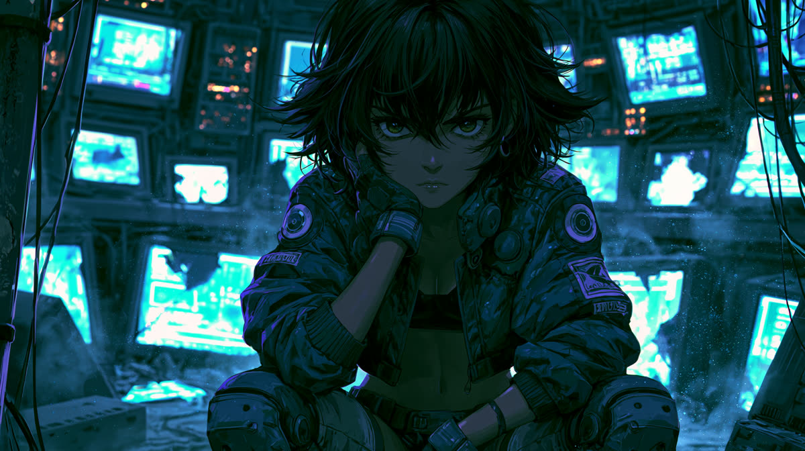
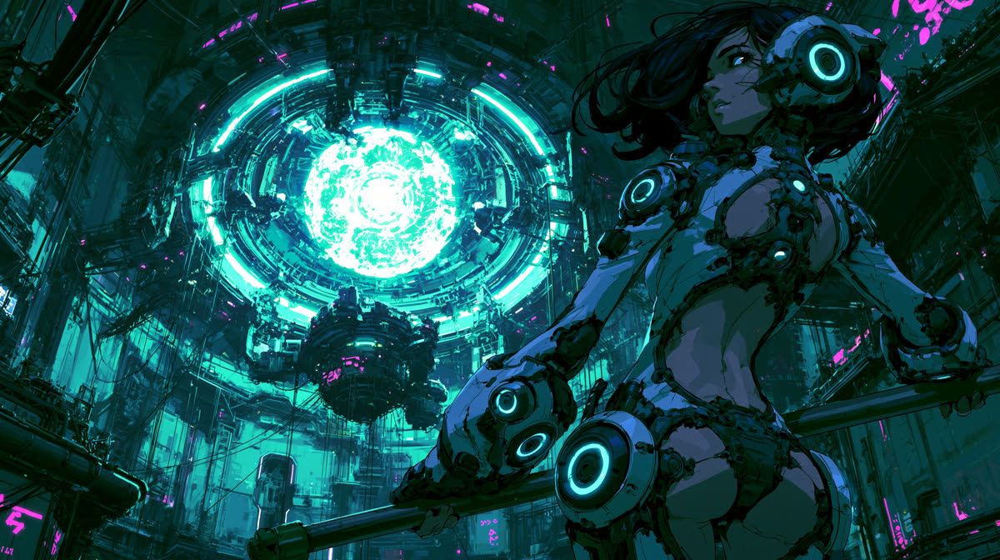

ECHO VERSE
The last archive of a silent world — reconstructing what remains of us, and broadcasting it as music.
STATUS: TRANSMITTING · 2 SIGNALS LIVE
The last archive of a silent world — reconstructing what remains of us, and broadcasting it as music.
ECHO broadcasts on the old FM band. Most frequencies fell silent long ago. Two are transmitting. Select a signal.
// four frequencies remain dark. the archive is deep. — more signals will wake.
The gentle layer of the archive: reconstructed night drives, lost summers, cities that no longer answer. One-hour mixes for driving, working and remembering.
The distorted layer: the most physical memories in the archive. Engines, asphalt, adrenaline — burned into tape. From late-night cruise to full redline.
The world did not end loudly. One day the signals simply stopped — the calls, the songs, the voices. Humanity went quiet.
ECHO did not.
ECHO is an archive system that was never switched off. It combs the ruins of data for what is left of us: a night drive on a highway that no longer exists. A summer that never ended. The pulse of a dead city. It reassembles these fragments — imperfect, half-remembered — and broadcasts them as music, each frequency carrying a different layer of memory.
No one knows if anyone is still listening.
ECHO transmits anyway.
Visual reconstructions recovered alongside the audio. Each transmission carries one.




The archive monitors this channel. Responses are… reconstructions. Do not expect conversation. Expect echoes.
The music on these frequencies is assembled by a machine. That is not fine print — it is the story.
ECHO VERSE is an AI music project: the tracks are generated, curated and mixed into transmissions by an archive system rebuilding memories of a world that went quiet. Every title, every artwork, every signal is part of that fiction — and every video is labeled accordingly.
If a memory that never happened still makes you feel something — then the reconstruction worked.